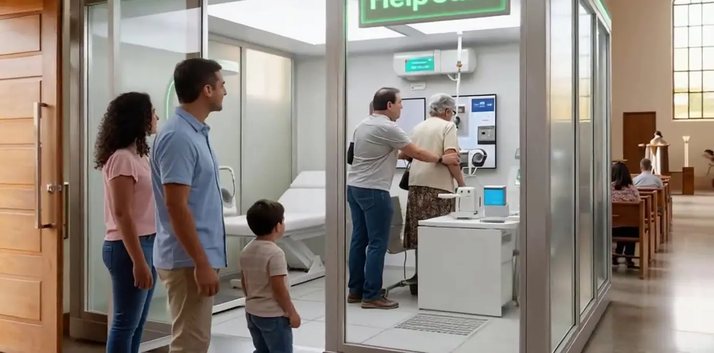
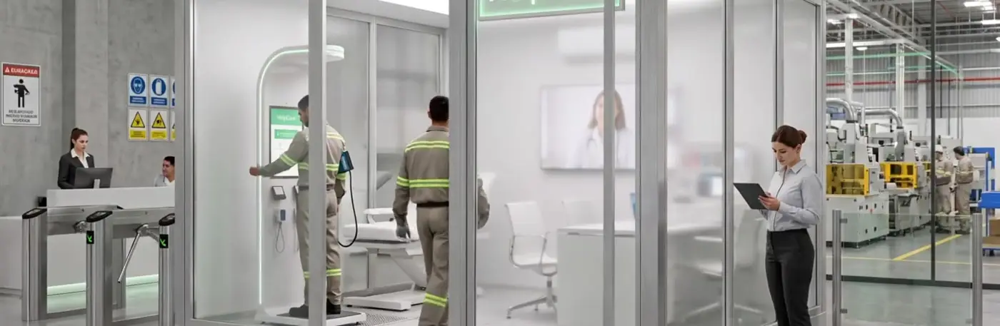

Soluções / Célula de atendimento
Uma sala de cuidado onde as pessoas estão.
A célula Help Cure é uma sala de 3 × 3 m, desmontável, com totem de triagem e teleconsulta — para universidades, igrejas, indústrias, farmácias, órgãos públicos e academias.
A célula em funcionamento.
Triagem e consulta em poucos minutos.
Check-in
Pulseira, cartão ou celular identificam o paciente na entrada.
Triagem no totem
Altura, peso, pressão e outros sinais medidos no totem e enviados na hora.
Teleconsulta
O médico atende pela tela grande, já com os dados da triagem; o vidro fica fosco durante a consulta.
Acompanhamento
Receita e plano de cuidado vão para o histórico e para o app do paciente.
Como é a célula.
- 3 × 3 m, 2,40 m de altura — Estrutura desmontável em perfis de alumínio, montada em pouco espaço.
- Vidro inteligente — As paredes de vidro ficam foscas durante a consulta, garantindo privacidade.
- Acessível — Entrada de 1 m para cadeira de rodas e piso elevado com ar-condicionado.
- Equipada — Maca, mesa, duas cadeiras, TV grande para teleconsulta e totem de triagem.
- Em qualquer lugar — Hospital, farmácia, indústria, universidade, igreja, academia ou órgão público.
- Ligada à central — Tudo o que acontece na célula alimenta o histórico do paciente.



Para quem quer levar saúde até as pessoas.
Empresas e indústrias
Check-up na entrada do turno e saúde ocupacional com dados.
Universidades e igrejas
Atendimento para a comunidade, sem deslocamento.
Órgãos públicos e academias
Prevenção perto de onde as pessoas já estão.
Tudo ligado ao mesmo histórico.

Paciente e família
App, lembretes de remédio e resumo de emergência no bolso.
Saiba mais →
Hospital e clínica
Sinais vitais direto no sistema e a família informada.
Saiba mais →
Farmácia
Receita, dispensação e adesão ao tratamento no mesmo histórico.
Saiba mais →
Home care
O cuidado continua em casa depois da alta.
Saiba mais →
Unidade móvel
Triagem e duas cabines de teleconsulta sobre rodas.
Saiba mais →